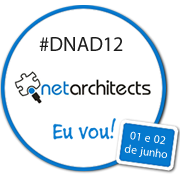
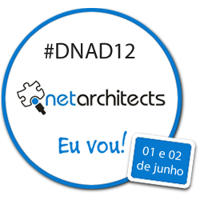

Páginas amigas
Apoio de mídia
Tenha uma página amiga
Vamos seguir uma ideia muito interessante que outros eventos já utilizaram: páginas amigas. Você nos ajuda a divulgar o DNAD12, cria um artigo, post no blog, ou algo do tipo, com um link para alguma(s) página(s) do evento, nos envia uma mensagem em dnad@dotnetarchitects.net e nós linkamos de volta pra você na nossa página de páginas amigas, que será criada em breve (só twitter não vale, precisa se esforçar mais que isso).
Pra ajudar temos alguns banners que vocês já devem ter visto em alguns sites que já estão nos apoiando. Fiquem à vontade para baixar e usar (botão direito, “Save As”, “Save image as“ ou algo do tipo).
|   |
{kind=link}
{kind=link}
{kind=link}
{kind=link}
Não se esqueça de mencionar também o twitter do grupo (@netarchitects) e a hashtag do event deste ano(#dnad12).
Aproveitem para divulgar com bastante força as inscrições, que estão com desconto, a grade, que está quase fechada, e o patrocínio, que é uma oportunidade para as empresas se destacarem e trás benefícios para a comunidade, proporcionando um evento ainda melhor.
É bom lembrar que o evento não tem fins lucrativos, e sempre prestamos conta de todo valor que entra.
Nossas URLs encurtadas
http://bit.ly/euvounodnad12
http://bit.ly/dnad12patrocinio
http://bit.ly/dnad12docpatrocinio
http://bit.ly/dnad2012
http://bit.ly/dnad12palestrantes
http://bit.ly/dnad12prog
http://bit.ly/dnad12viagem
http://bit.ly/dnad12amigos
http://bit.ly/dnad12org
http://bit.ly/hashdnad12
http://on.fb.me/fbdnad12
http://bit.ly/dnad12news